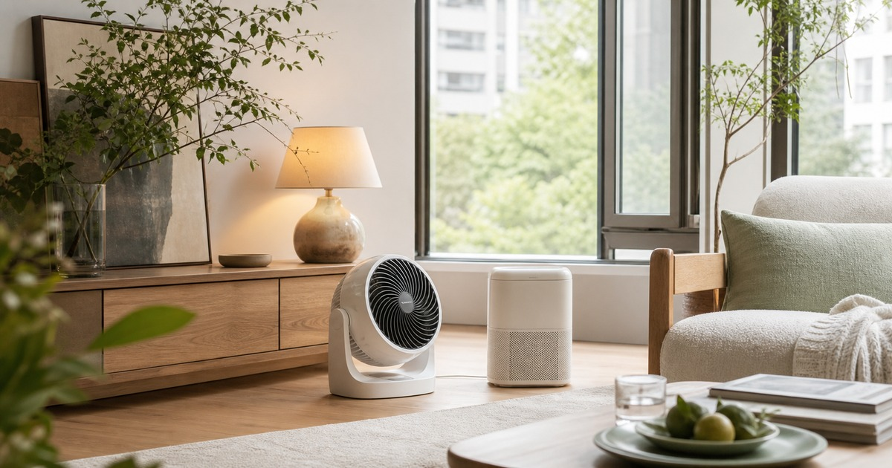

夏天前先整理家的空氣路線：循環扇、小家電與照明的舒適配置
把客廳、書桌與廚房的熱源先分清楚，再決定循環扇、小家電與燈具該放在哪裡。

夏天的家不一定需要一次添購很多設備。更常見的問題，是冷氣口、窗邊、廚房熱氣與工作桌彼此打架，讓循環扇、小家電和燈具都放在不順手的位置。這篇從台灣住家常見的格局出發，先整理風怎麼走、熱停在哪裡，再看哪些選物能補上日常空白。
先找出家裡最悶的三個位置
傍晚回家後，先不要急著開所有電器。站在玄關、沙發旁與書桌前各停一分鐘，感受哪裡最悶、哪裡有西曬、哪裡因為廚房或浴室濕氣而變得黏膩。這些位置通常比坪數更能決定你需要什麼。
如果悶熱集中在客廳角落，循環扇要協助空氣回到主要活動區；如果問題在書桌，桌面小家電與燈具就要避開手肘、螢幕和插座動線；如果是廚房熱氣外溢，先改善通風和收納，再考慮增加新設備。
- 客廳：確認冷氣口、窗戶與沙發方向。
- 書桌：確認插座、螢幕反光與走線。
- 廚房：確認熱源、濕氣與小家電收納位置。
循環扇要服務動線，不是佔據動線
循環扇最容易買錯的位置，是放在看起來空的角落，卻剛好卡住開櫃、掃地或經過的路線。比較實用的做法，是先決定它要把空氣送往哪裡，再量底座、電線長度與收納高度。
小宅或租屋處尤其要注意聲音、清潔和季節收納。機身好搬、格柵好擦、冬天能收進櫃子，往往比單純追求更大台更重要。
- 避免放在門片、櫃門與走道交會處。
- 先確認清潔方式，再看風量段數。
- 桌面款要避開紙張、咖啡杯和螢幕下緣。
Elite 嚴選
燈具和小家電要一起規劃
夏天桌面最容易變亂，常常不是東西太多，而是每一件都需要插座。檯燈、充電器、風扇、除濕或廚房小家電如果沒有一起規劃，最後會變成延長線接延長線。
照明先看用途：閱讀需要穩定光線，餐桌需要柔和氛圍，玄關只需要快速辨識物品。小家電則先看使用頻率，每天用的放外面，每週用的放近櫃，季節用的不要佔桌面。
- 書桌優先保留一個固定充電區。
- 餐桌旁的燈光不要直射眼睛。
- 廚房小家電要留散熱與擦拭空間。
三種空間的配置範例
租屋套房可以用一台容易移動的循環扇搭配桌燈，白天支援工作桌，晚上轉向床邊或窗邊。小家庭客廳則適合把循環扇放在冷氣與沙發之間，讓風路不要只停在電視牆前。
辦公室或共用工作角落，則要把聲音與桌面整潔放在前面。外觀再好看的小家電，只要線材亂、清潔難或聲音太明顯，就很難長期留下。
下手前量這四件事
真正值得買的物件，應該能在家裡找到固定位置。先量寬度、高度、插座距離和收納深度，再回頭看商品頁的尺寸與使用限制，會比只看照片可靠很多。
生活創意家 Life Creative KINYO、Airmate 艾美特、KINYO 官方旗艦店與心科技生活家電館，可以分別從循環扇、小家電與照明周邊切入；選擇時仍建議以商品頁標示為準，搭配自己的空間條件慢慢比較。
- 擺放寬度。
- 桌面或地面高度。
- 插座距離。
- 季節收納深度。
同主題品牌參考
FAQ
這篇文章會直接推薦單一品牌嗎？
不會。本文會把不同品牌放回生活情境中比較，協助讀者判斷使用頻率、收納位置與商品頁資訊，而不是把單一品牌寫成唯一答案。
商品價格、活動或庫存可以以本文為準嗎？
不可以。價格、活動、庫存、規格與配送條件都可能變動，請以下單前看到的商品頁或店家頁公告為準。
如果內容涉及健康、寵物或照護用品，應該怎麼判斷？
請把本文視為一般生活採買整理，不要當成醫療、營養、獸醫或個人化建議；若有健康、照護或寵物狀況，應先詢問合格專業人員。
下一步建議
先替家裡畫出風向、插座和照明位置，再從常用區域開始補上合適的小家電。
重要警語
本文不承諾降溫、節電或健康效果；商品規格、活動、價格與庫存請以商品頁公告為準。
本文含品牌／商品導購連結；若你透過部分商品連結前往選購，Elite Fashion 可能取得合作收益。本文仍以編輯判斷與使用情境整理為主，價格、規格、活動與庫存請以商品頁公告為準。